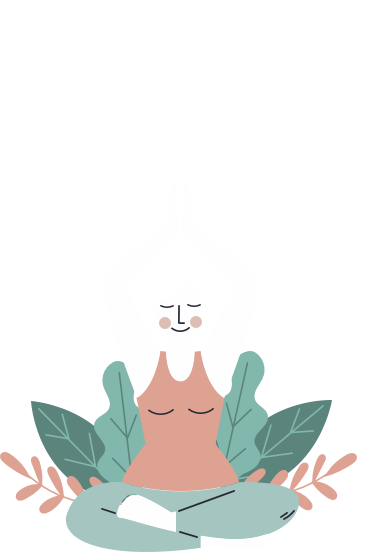

| What is Meditation? | |
|---|---|
Meditation can be defined as a set of techniques that are intended to encourage a heightened state of awareness and focused attention.
Meditation is also a consciousness-changing technique that has been shown to have a wide number of benefits on psychological well-being.
|
 |
Why Is Meditation Important?
| Helps Reduce Stress | |
|---|---|
| Throughout the day, when we experience stress, our bodies automatically react in ways that prepare us to fight or run.
This is your body's stress response, otherwise known as your fight-or-flight response. In some cases of extreme danger, this physical response is helpful.
However, a prolonged state of such agitation can cause physical damage to every part of the body. Meditation affects the body in exactly the opposite ways that stress does—by triggering the body's relaxation response. It restores the body to a calm state, helping the body repair itself and preventing new damage from the physical effects of stress. It can calm your mind and body by quieting the stress-induced thoughts that keep your body's stress response triggered. |
|
| Controls Anxiety | |
| Mindfulness meditation has been shown to be effective at reducing both physical and mental symptoms of anxiety.
It may help you feel calmer in general, and it could also help you prevent and navigate anxiety episodes. In fact, some research has found that standalone mindfulness exercises may have a positive effect on anxiety and depression symptoms. To feel its benefits, you can practice this type of meditation for 1 minute or for 1 hour. You can also search for therapists who incorporate it into their practice, or you could practice it on your own. |
|
| Promotes Emotional Health | |
| Studies have shown that meditation improves self-image and self-worth. When we meditate, we get a clear picture of our mind and become aware of the thoughts that drive our emotions and actions at the moment.
A large-scale study found that regular meditation decreases the likelihood of developing depression and mood-related disorders (Jain, Walsh, Eisendrath, Christensen, & Cahn, 2015). Besides some forms of meditative practices which also promoted positive thinking, as researchers stated, and could improve the overall emotional health of an individual. |
|
| Improves Cognition | |
| Researchers agree that an excellent way for professionals to increase the likelihood of success is to keep meditation practice as a part of their daily routine. Studies have revealed that both transcendent and mindful meditation practices improve the brain’s problem-solving and decision-making strategies, which can bring a desirable shift in our professional life. | |
| Improves Sleep | |
| Although it’s not the equivalent of flipping a switch to better sleep, the practice of meditation over time can be a powerful tool on the path to wellness and sleep health.
More and more research is aimed at studying how mindfulness principles can be used to treat insomnia. The daily practice of meditation is recognized throughout the world as a path to better self-knowledge and well-being. Practicing meditation helps us bring clarity of mind, develop our capacity for compassion and empathy, create meaningful connections to others, focus on gratitude in our lives, explore and work through our fears, and develop the all-important mind-body connection. When incorporated into a bedtime routine, it can be a prepare the mind and body for a better night’s sleep. |
|
| How to Meditate (Meditation 101) with Resources to Getting Started | |
| How Did It Originate? | |
|---|---|
The ancient practice of meditation has been used by civilizations around the world to calm and focus the mind toward greater physical and mental well-being.
Through various techniques and approaches to find this calm, peaceful & relaxing meditation is a practice that millions of people incorporate into their daily lives.
|
 "Feelings come and go like clouds in a windy sky. Conscious breathing is my anchor." –Thich Nhat Hahn |
How to Meditate
What is Meditation| Why Is It Important| How Did It Originate| How to Meditate
©2021 Meditation. All rights reserved.